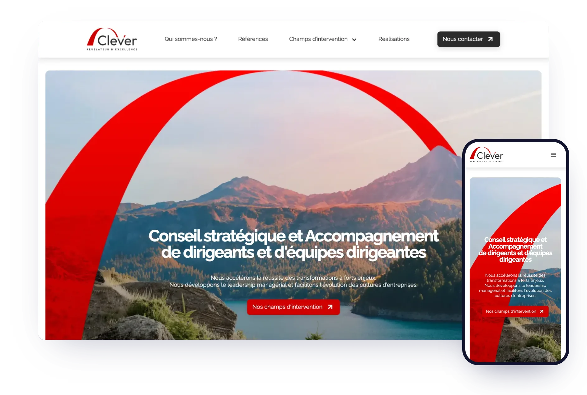
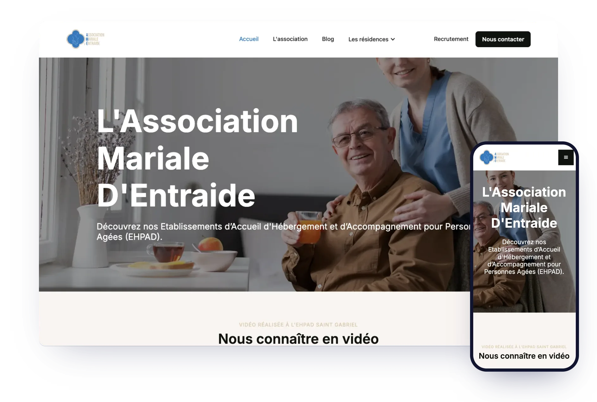
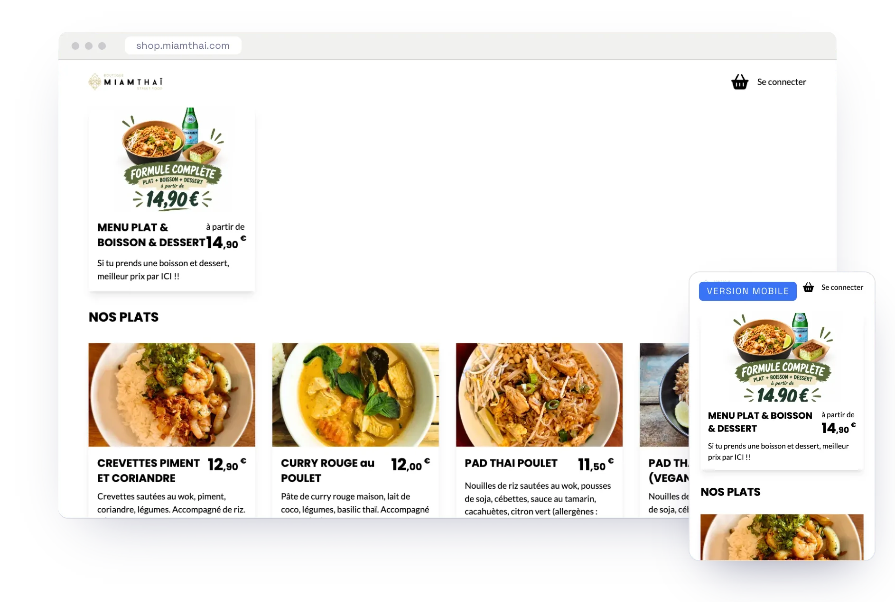
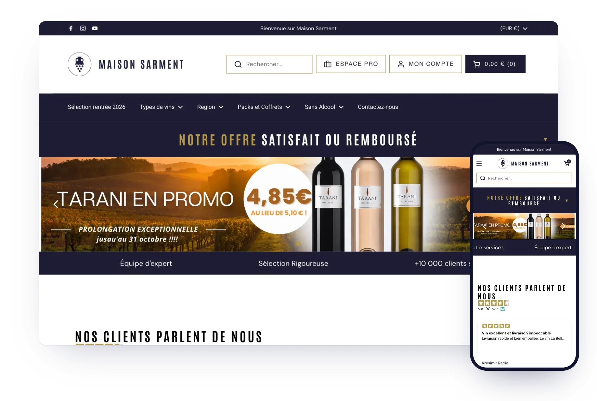

Pour qui
Pour qui travaillons-nous ?
HWS accompagne une grande diversité de clients, des TPE aux grands comptes, en passant par les collectivités et les ETI. Voici quelques exemples de projets que nous réalisons pour que chacun puisse s'identifier et visualiser concrètement ce que nous pouvons faire ensemble.
Site vitrine & corporate
Idéal pour les TPE, PME et professions libérales. Votre site vitrine sur-mesure incarne votre identité de marque, convertit vos visiteurs et se positionne durablement sur Google.

Site vitrine · ToulouseClever Voir le projetSite institutionnel
Pour les associations, collectivités et grandes structures. Site robuste, accessible RGAA, multi-rubriques avec un back-office intuitif pour que vos équipes gèrent le contenu en totale autonomie.

Site institutionnel · AssociationAssoc. Mariale d'Entraide Voir le projetPlateforme métier & outil interne
CRM, ERP, portail collaboratif, intranet, catalogue produit. L'outil pensé pour votre métier, pas le logiciel générique qu'on vous impose. Développé autour de vos process, pas l'inverse.

Plateforme métier · RestaurationMiam Thai Voir le projetSite e-commerce
Boutique sur-mesure pensée pour la conversion. Catalogue, paiement sécurisé, gestion des stocks et des commandes selon votre propre process, sans les limitations d'un Shopify ou WooCommerce générique.

E-commerce · CavisteMaison Sarment Voir le projetPortail & extranet
Espace sécurisé pour vos clients, collaborateurs ou partenaires. Accès restreints par rôle, partage de documents, tableaux de bord, notifications, un vrai outil de travail.
 Outil interne · SaaSNotifications InApp
Voir le projet
Outil interne · SaaSNotifications InApp
Voir le projet